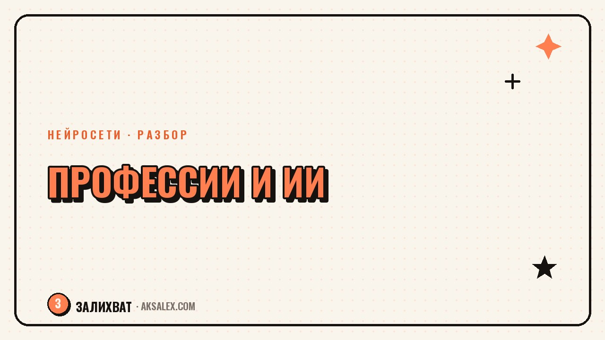

Заменит ли нейросеть вашу профессию: разбор

Вопрос «заменит ли нейросеть мою профессию» всплывает у каждого, кто хоть раз попробовал ChatGPT или Midjourney и увидел, как быстро они выдают результат. Тревога понятная: технология меняется на глазах, а прогнозы в новостях звучат то как приговор целым отраслям, то как обещание, что бояться нечего. Разберём по отраслям, где ИИ уже реально меняет работу, а где это скорее шум, и что с этим делать, если твоя профессия в зоне риска.
Почему этот страх появился именно сейчас
До 2022 года разговоры про ИИ и рынок труда были абстрактными - что-то там про роботов на заводах через двадцать лет. Появление доступных языковых моделей и генераторов изображений всё изменило: теперь любой человек за пару минут получает текст, картинку или расчёт, на который раньше уходил день работы специалиста. Это не футурология, а личный опыт миллионов людей, и он пугает сильнее любого прогноза.
Второй фактор - скорость. Раньше технологии внедрялись годами: пока компании закупали оборудование, обучали персонал, меняли процессы. Нейросети встраиваются в рабочие процессы за недели, потому что доступны через браузер и не требуют инфраструктуры. От этого ощущение, что перемены наступают быстрее, чем успеваешь среагировать.
Что усиливает тревогу
- Заголовки СМИ про «миллионы потерянных рабочих мест» без ссылки на исходное исследование
- Реальные истории увольнений в отдельных компаниях, которые обобщают на всю отрасль
- Собственный опыт: увидел, как ИИ написал текст за минуту, и решил, что профессия копирайтера умерла
- Отсутствие ясного понимания, что именно умеет и не умеет технология
Как отличить реальную угрозу от паники
Первое правило: смотри не на профессию целиком, а на задачи внутри неё. Почти любая работа - это набор из десятков разных функций, и ИИ обычно закрывает только часть из них, причём самую рутинную. Бухгалтер не исчезнет как профессия, но перестанет вручную сверять таблицы. Юрист не исчезнет, но перестанет тратить часы на поиск похожих дел.
Второе правило: разделяй задачи, где нужен результат, от задач, где нужна ответственность. Нейросеть может сгенерировать текст договора, но подпись и юридическую ответственность за его условия несёт человек. Она может предложить диагноз по симптомам, но решение о лечении принимает врач, который отвечает за здоровье пациента. Ответственность - то, что ИИ не берёт на себя и вряд ли будет в ближайшие годы.
Нейросеть меняет не то, кем ты работаешь, а то, как ты выполняешь конкретные задачи внутри профессии.
Три вопроса для самопроверки
- Сколько моей работы - это повторяющиеся операции по шаблону, а сколько - решения в нестандартных ситуациях
- Кто несёт ответственность за итоговый результат моей работы перед клиентом, начальником или законом
- Требует ли моя работа живого контакта, доверия и эмпатии, которые сложно заменить интерфейсом
Разбор по отраслям: где ИИ уже меняет работу
В разных сферах степень изменений сильно отличается. Где-то нейросети уже стали привычным инструментом, а где-то остаются экспериментом, который не выдерживает реальных условий. Ниже - таблица с честной оценкой по крупным направлениям, без запугивания и без успокоительных обещаний.
| Отрасль | Что меняет ИИ уже сейчас | Что остаётся за человеком |
|---|---|---|
| Копирайтинг и контент | Черновики текстов, идеи заголовков, рутинные посты | Стратегия, голос бренда, финальная редактура и ответственность за факты |
| Бухгалтерия | Сверка данных, типовые проводки, первичные отчёты | Сложные случаи, налоговое планирование, общение с проверяющими органами |
| Юриспруденция | Поиск судебной практики, черновики типовых документов | Стратегия защиты, переговоры, ответственность за консультацию |
| Дизайн и иллюстрация | Быстрые визуализации, вариативность макетов, референсы | Концепция, вкус, адаптация под задачу бренда |
| Программирование | Автодополнение кода, генерация типовых функций, поиск багов | Архитектура систем, сложная логика, ответственность за продакшн |
| Клиентский сервис | Ответы на частые вопросы, первичная сортировка обращений | Сложные и конфликтные ситуации, эмоциональная поддержка клиента |
Обратите внимание на закономерность: везде ИИ забирает повторяющуюся часть работы, а человеку остаётся то, что требует контекста, ответственности или эмоционального контакта. Это не совпадение - именно эти два качества нейросети воспроизводят хуже всего.
Какие профессии в зоне риска, а какие нет
В большей зоне риска - профессии, где вся работа состоит из одной повторяющейся операции без вариаций: набор типовых текстов по шаблону, простая обработка данных, базовый перевод стандартных документов, первичная модерация контента. Если твою рабочую функцию можно описать одной фразой и она не меняется от заказа к заказу, стоит присмотреться к тому, как её автоматизируют конкуренты.
В меньшей зоне риска - профессии, где важны контекст конкретного человека или ситуации, ответственность перед третьими лицами и живой контакт. Это врачи, психологи, педагоги, руководители, специалисты по продажам сложных продуктов, мастера ручного труда - от парикмахеров до сантехников. Здесь ИИ становится помощником, а не заменой, потому что финальное решение и доверие клиента остаются человеческими.
Промежуточная группа
- Аналитики - рутинные расчёты автоматизируются, но интерпретация данных под конкретный бизнес остаётся за человеком
- Маркетологи - генерация вариантов текста и картинок ускоряется, но стратегия и понимание аудитории не заменяются
- Переводчики - типовые тексты обрабатывает машина, но художественный перевод и локализация с культурным контекстом требуют человека
- HR-специалисты - первичный отбор резюме автоматизируется, но собеседование и оценка культурного соответствия остаются ручными
Что делать, если твою профессию правда потеснят
Первый шаг - честно посчитать, какая доля твоих задач автоматизируется в течение ближайшего года-двух. Не профессия целиком, а конкретные операции. Если это 20-30% рутины, это хорошая новость: у тебя освобождается время на то, что ИИ не умеет, и растёт ценность как специалиста, который умеет пользоваться инструментом быстрее коллег.
Второй шаг - научиться пользоваться нейросетями в своей сфере раньше, чем это станет обязательным требованием работодателя. Это не про сложные курсы: достаточно попробовать несколько бесплатных инструментов на своих реальных рабочих задачах и посмотреть, что реально ускоряет процесс, а что просто отвлекает.
Третий шаг - усилить именно то, что не заменяется: экспертизу в узкой теме, репутацию, навыки переговоров и умение брать ответственность за нестандартные решения. Специалист, который одновременно разбирается в теме глубоко и умеет работать с ИИ-инструментами, становится не менее, а более востребованным - именно потому, что таких людей пока немного.
Практический план на ближайший месяц
- Выпиши все свои рабочие задачи за неделю и отметь, какие из них повторяются без изменений
- Попробуй решить 2-3 такие задачи через нейросеть и сравни время и качество результата
- Освободившееся время направь на задачи, где нужен твой опыт, а не шаблон
- Расскажи руководителю или клиентам, что ты уже используешь ИИ - это укрепляет репутацию, а не подрывает её
Ошибки, которые мешают адаптироваться
Самая частая ошибка - игнорировать тему целиком, надеясь, что перемены пройдут мимо. Даже если твоя профессия сегодня в безопасной зоне, инструменты меняются быстро, и лучше познакомиться с ними спокойно, а не в панике, когда конкуренты уже используют их вовсю.
Вторая ошибка - обратная: бросить всё и пытаться выучить программирование или дизайн промптов за месяц, поддавшись общей тревоге. Резкая смена сферы без понимания, что тебе там нужно и подходит, часто приводит к разочарованию. Разумнее двигаться постепенно, встраивая ИИ в текущую работу и наблюдая, куда это ведёт.
Третья ошибка - обесценивать свой опыт. Годы практики в профессии, накопленная экспертиза и репутация - то, что нейросеть не воспроизведёт за пару месяцев работы. Комбинация твоего опыта и умения пользоваться новыми инструментами почти всегда сильнее, чем у новичка, который умеет только писать промпты.
Частые вопросы
Какие профессии заменит ИИ в первую очередь?
В первую очередь автоматизируются задачи с одной повторяющейся операцией без вариаций: типовой набор текста, базовая обработка данных, простая модерация контента. Это не всегда целая профессия, чаще - конкретные функции внутри неё, а не человек полностью.
Как понять, что моя работа в зоне риска?
Оцени, сколько твоих задач можно описать одной неизменной формулой и сколько требуют контекста конкретной ситуации. Если рутины больше 70% и в ней нет ответственности перед третьими лицами, стоит заранее осваивать инструменты в своей сфере.
Стоит ли сейчас менять профессию из-за нейросетей?
Резкая смена профессии из страха - редко хорошее решение. Разумнее сначала попробовать встроить ИИ в текущую работу и посмотреть, как меняется нагрузка, а уже потом решать, нужна ли смена сферы или достаточно новых навыков в текущей.
Как нейросети меняют работу в разных отраслях?
Везде похожий паттерн: ИИ забирает повторяющуюся часть работы - черновики, расчёты, поиск информации, а человеку остаётся то, что требует контекста, ответственности и живого контакта с людьми. Разница только в доле такой рутины в конкретной профессии.
Можно ли усилить свою профессию с помощью ИИ, а не бояться его?
Да, и это работает чаще, чем полная замена. Специалист, который знает свою тему глубоко и умеет быстро получать черновики, расчёты и варианты решений через нейросеть, обычно становится продуктивнее и ценнее, а не лишается работы.
Раз тема оказалась полезной, вот что почитать следующим. Пошаговый разбор, как нейросеть помогает с курсовой без риска попасть на плагиат.
Читать статью →а не вручную